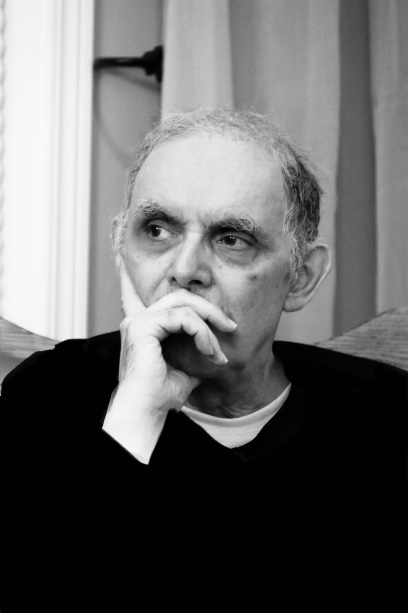

A man lands on a woman after trying to throw himself off a bridge in a botched suicide attempt. On the quiet riverbank, as he attends to her minor injury, he learns that she too was planning to end her life over a broken heart. An argument ensues over the relative seriousness of their respective losses, the nature of existence, and the harmful effects of the essays of biologist Stephen Jay Gould. Will this unexpected collision lead each of them back to the dark place where they started, or will they start anew?
Eve Ross Moore is thrilled to be a part of this year's Little Theatre Festival, and to be making her debut with Cactus Theatre Co. A local performer and playwright, Eve is a recent graduate of the University of Winnipeg's Theatre Program, and has also trained with the Village Conservatory for Musical Theatre. Recent credits include After August (Thinking & Feeling Theatre), Two Gentlemen of Verona (Indifferently Reformed), Mr and Mrs Nobody (Looking Glass Theatre), and From Up Here (University of Winnipeg).

Dave Pruden
Dave Pruden, a graphic artist/pressman by day, performed, stage managed, and been the tech in so many productions he has lost count. Most recently, Dave performed in "Rob and Jenny's First Date" (Dark Horse Theatre, Winnipeg Fringe 2025), "One Stoplight Town" (Winnipeg Mennonite Theatre 2025), "Companion: A Love Story" (Shoestring Players 2024) and "Specimen Sherman" (Dark Horse Theatre, Winnipeg Fringe 2023).
Dave loves to tell the stories and bring to life characters from the printed page to the stage. Also, he wishes for a world of peace and harmony, with plenty of parking.
Dave is very proud to be involved in the inaugural Little Theatre Festival, and encourages everyone to come out and see all the wonderful works this festival is offering.
Hope Figueroa
Director
Hope Figueroa (she/her) is an actor, improviser, and Arts Education advocate based in Winnipeg, MB. She is thrilled to make her community theatre directorial debut with Cactus Theatre Co!
Previously, Hope has directed at the high school level as a drama teacher at Tec-Voc (Dracula) and École Secondaire Sisler High School (Cheque Please, bi-annual scene nights).
Select acting credits include Cactus (Cactus Theatre Co.), The Savannah Sipping Society, Motherhood Out Loud, and Not Medea (R-G Productions); The Tempest (Indifferently Reformed); The Laramie Project (Meraki Theatre); and A Marriage Proposal (Merlyn Productions). A seasoned improviser, Hope is a member of the Winnipeg Improv Festival's Short-Form Ensemble. She performs with The Crosseyed Rascals, has guested at IF, and taken part in Winn-City Improv events.
Offstage, Hope is the President of the Manitoba Drama Educators' Association and works with teens as a guidance counsellor.
Steph Blanchette
Artistic Director
Stage Manager
Steph Blanchette is the founder of Cactus Theatre Co, created in memory of Daniel Gilmour and his play of the same name.
Steph first worked with Dan on “Italian American Reconciliation” at Shanley Fest 2018. They also worked together with Merlyn Productions where Dan loved performing for children, especially his niece and biggest fan Madelyn. It is an honour to be producing Cactus and bringing his words to the stage.
Steph co-produced “Mulligan's Island” (Winnipeg Fringe 2015), “Once On This Island” (Shoe In Productions 2017), and “Audition Deficit Disorder” (Winnipeg Fringe 2022). Other highlights are “Weirder Thou Art” (Winnipeg Fringe 2016, Toronto Fringe 2017), “Your Brain On Anxiety” (Winnipeg Fringe 2018), “The Weight of Shame” (An Seanchai Theatre Company 2023) and “9 to 5 The Musical” (RMTC Lawyers Play 2023).
Steph's next big project is producing “The Little Theatre Festival” with Siobhan Keely and Rob Kwade, bringing together community theatre in February 2026.